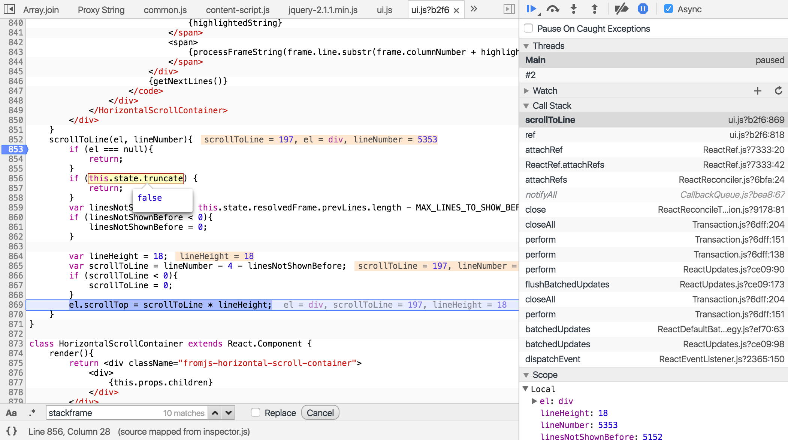
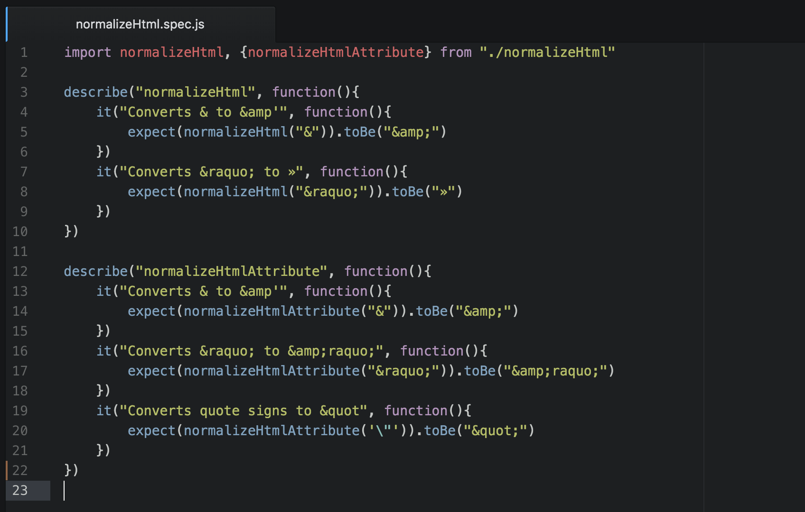
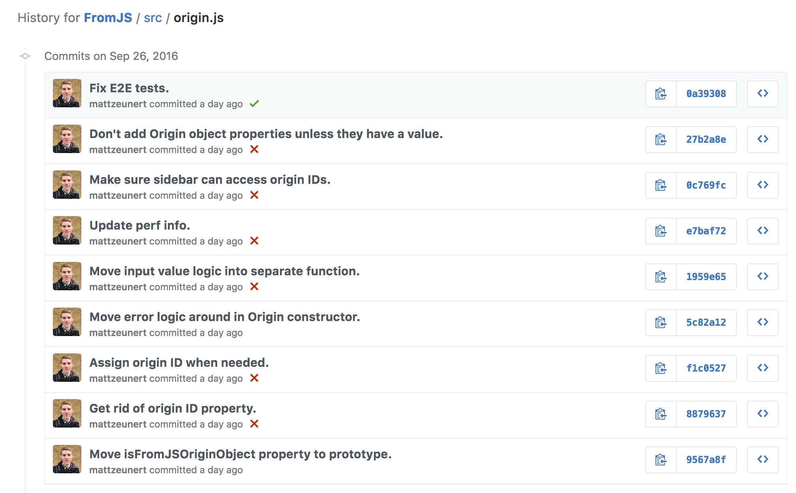
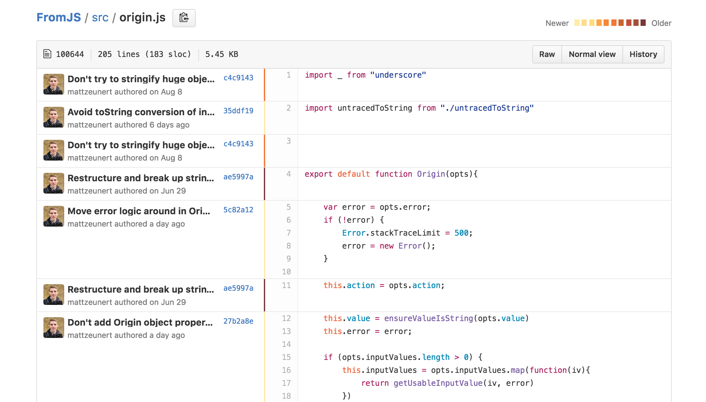
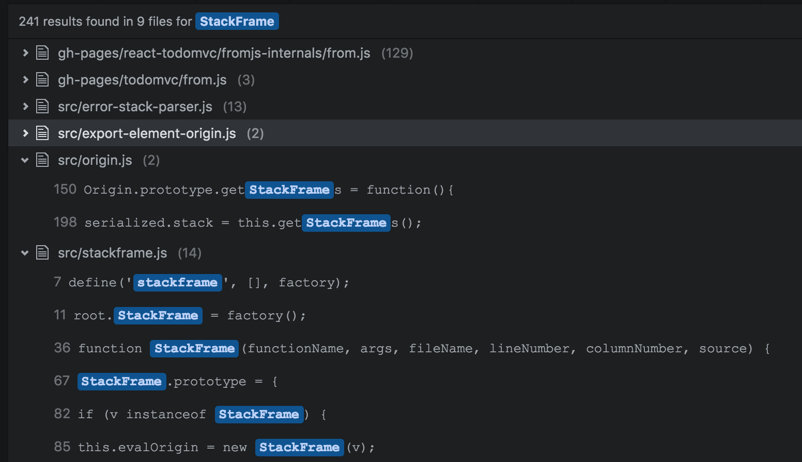

Strategies For Making Sense Of JavaScript Code
It's hard to understand what's going on when you first dive into an unfamiliar codebase. The decisions that were made when writing the code often aren't obvious.
This post will outline a few strategies to help you make sense of unfamiliar code.
Watch How The Code Behaves In Practice
A debugger lets you see the actual variable values at run time. You can run your code line by line, see how values change over time, and find out why specific functions are called.
Stepping through code will give you a more concrete understanding of how your code works in a real scenario.
The debugger also makes it easier to navigate through the codebase. For example, you can right-click on functions in the debugger to find the function definition.
However, to use a debugger you first need to know a page that runs the code that you're interested in. Then you can set a breakpoint in your code and step through it.

Look At Unit And Integration Tests
If your codebase comes with automated unit or integration tests you're lucky. The tests for the module you're looking at will show you how to use the module.
For example, you can see what kind of values can be passed into a function, and what the expected return value is.
The tests will also give you a high level idea of the purpose of the module, and its capabilities.
If your module has tests they'll be in a test file named something like like module.spec.js, module-test.js or tests/module.js.

Use Git History To Discover The "Why"
Version control software keeps track of code changes. Each change is recorded as a commit, showing the code that changed as well as a message explaining the changes.
To see recent changes made to a particular file look at its revision history.

When reading code you'll often run into sections that appear needlessly complicated. Why wasn't a much simpler solution picked instead?
The commit messages can provide an answer. You can use Git or SVN blame to find out when a specific line of code was added, or when it was last modified.

If a line was added to fix a particular bug, blame lets you find the commit for the bug fix.
Hopefully, the commit message will explain the bug, and maybe reference a Github issue or a ticket in a project management tool like Jira.
(When writing your own code, don't make others rely on blame. Add a comment explaining what went wrong in the past and why this particular solution was needed.)
Search Through Your Source Code
This is low tech, but it works even when you don't have automated tests or a commit history available.
Search for the function or module name in your editor. That will show where the function or module is used.
Looking at the different usage examples will also give you a better idea of the kind of values your code needs to handle.
